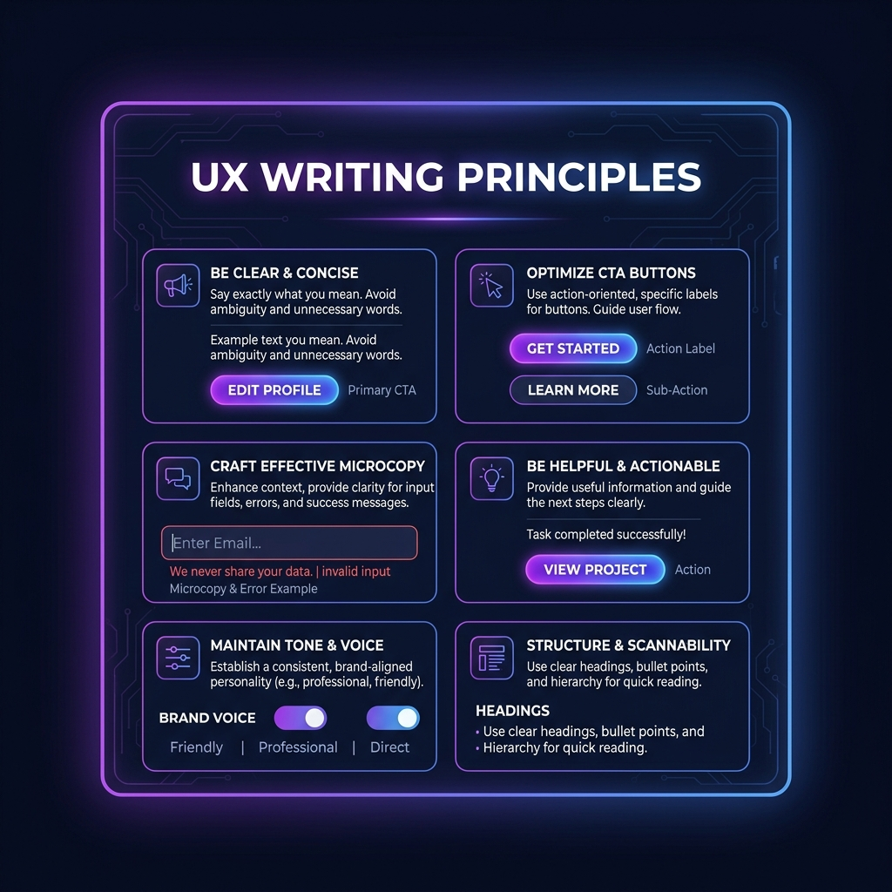

Dasar UX Writing: Menulis untuk Pengalaman Pengguna

UX Writing adalah praktik menulis salinan (copy) yang memandu pengguna di dalam produk digital, seperti aplikasi atau website. Tujuan utamanya adalah membantu pengguna mencapai tujuan mereka dengan cara yang paling intuitif, efisien, dan menyenangkan.
Tiga Pilar Utama UX Writing
Setiap teks yang muncul di antarmuka pengguna (tombol, pesan error, label menu) harus memenuhi tiga kriteria dasar ini:
- Clear (Jelas): Pengguna tidak perlu berpikir keras untuk memahami arti teks. Hindari jargon teknis yang membingungkan.
- Concise (Singkat): Gunakan kata sesedikit mungkin tanpa mengurangi kejelasan makna. Pengguna tidak membaca teks di layar, mereka memindai (scan) teks.
- Useful (Berguna): Setiap kata harus mengarahkan pengguna ke langkah berikutnya atau memberikan informasi yang benar-benar mereka butuhkan.
Contoh Penerapan UX Writing
Mari kita lihat perbandingan teks di antarmuka yang kurang baik dengan teks yang sudah dioptimalkan:
1. Pesan Konfirmasi Penghapusan
❌ Sebelum (Kurang Baik): "Apakah Anda yakin ingin menghapus data ini? Aksi ini tidak dapat dibatalkan." (Tombol: "OK" dan "Batal")
✅ Sesudah (UX Writing Baik): "Hapus artikel ini permanen?" (Tombol: "Hapus" dan "Batal")
2. Pesan Error Login
❌ Sebelum (Kurang Baik): "Terjadi kesalahan otentikasi. Silakan periksa kredensial Anda dan coba lagi nanti."
✅ Sesudah (UX Writing Baik): "Password yang Anda masukkan salah. Silakan coba lagi."
Kesimpulan
UX Writing yang baik tidak terlihat. Ketika teks di antarmuka dirancang dengan baik, pengguna akan mengalir menyelesaikan tugas mereka tanpa hambatan. Sebagai desainer UI/UX atau developer Front-end, membiasakan diri menulis copy yang berpusat pada pengguna (*user-centered copy*) adalah skill yang sangat berharga.